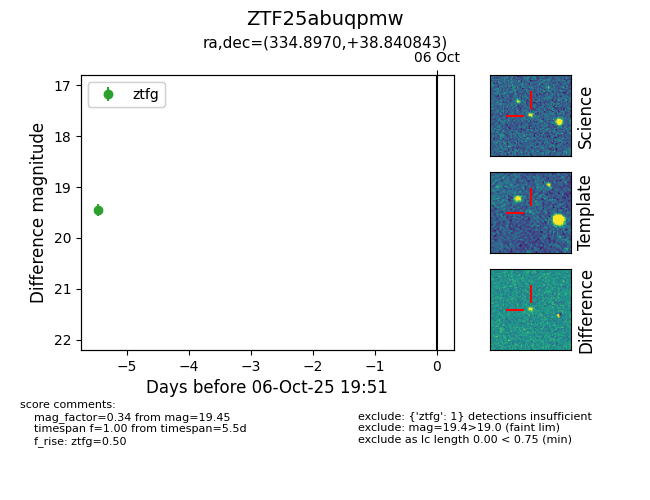

FINK: ZTF25abuqpmw
Lasair: ZTF25abuqpmw
ALeRCE: ZTF25abuqpmw
ZTF25abuqpmw (ztf,fink)
equatorial (ra, dec) = (334.8970,+38.84084)
galactic (l, b) = (93.1782,-15.10313)

last ztfg=19.45
1 ztfg detections